(click to enlarge)
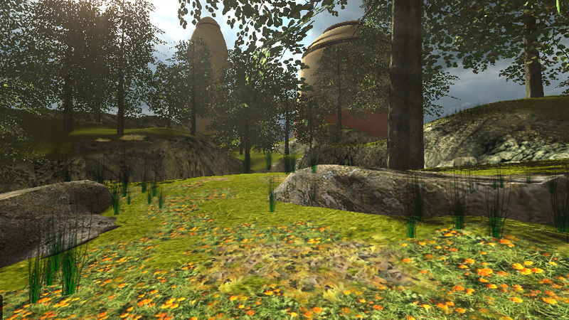
Introduction
Decals in Torque 3D refer to image textures that are overlaid on objects such as the terrain or players to give the appearance of surface affects such as leaves, flowers, or litter on the ground, or for dynamic changes to the environment, such as foot prints, or burn marks from explosions without the need to create and place special terrain materials or objects to represent the effects. Torque 3D's Decal Editor provides you with control over decals of any type, including placement and other attributes. Decals can be placed via the editor to any visible surface within the world.
As with the other Torque 3D editors this can be easily achieved by using the built-in WYSIWYG (What-You-See-Is-What-You-Get) editing tools.
Setup
From the Toolbox, select your project and load the Empty Terrain level.
You can use the basic terrain for our upcoming decal experiments in this article. If you want to use your own decals you will need to add them to the project materials first. Please see the material editor for more information on how to add materials.
The decal system can handle single images or multiple images with transparency separating the materials within the image.
(click to enlarge)
Interface
To access the Decal Editor press the F7 key or select it from the drop down menu at the top of the World Editor, by choosing Editors > Decal Editor:
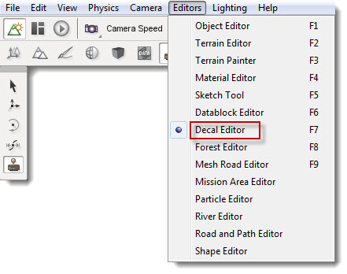
Or select the Decal icon from the World Editor tool bar.
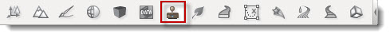
The Decal editor has two main parts, one where you can add and manipulate the size, rotation and position of the decal, and the other for adjusting the decal properties.
On the upper-left hand side of your screen, you'll see a toolbar which provides tools for decal placement and manipulation.
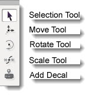
On the right of the screen, there is the Decal Editor pane which displays a list of decals, and the Template Properties pane below it, which displays properties of the selected decal along with a texture preview.
In the Decal Editor pane on the top right, under the Library tab, is a list of the decal datablocks defined in the system, which are really decal descriptions. In the Instances tab, there is a list of all decals that have been created within the current project.
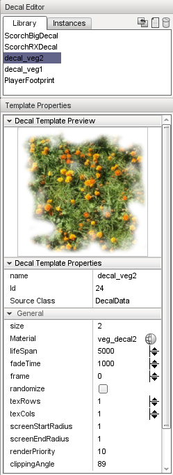
Adding a New Decal Datablock to the Library
Before you can paint a decal to your world, the datablock needs to exist in the decal library. To add a new decal, simply press the New Decal icon at the top of the Decal Editor pane.
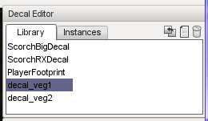
This will add a new blank decal to the library, ready for you to select or add a material and set up its properties.
Naming a New Decal Datablock
After creating a new decal you will want to name it. This can be achieved by selecting the name property and entering a new name, then pressing the Enter key.
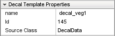
Removing Decal Datablock from the Library
To remove an existing decal from the library simply select the decal in the list then click the Delete icon.
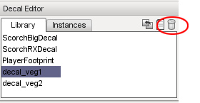
If you select Yes all instances of the selected decal will be removed. The datablock will continue to exist until the World Editor is restarted.
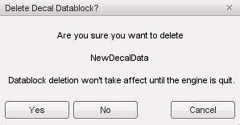
Missing Decals
If a decal exists in the level, but is not rendering, it means the datablock for it has either been deleted, renamed, or corrupted. The Retarget button allows you to assign an existing datablock to a missing decal.
To open the retarget dialogue, select the decal that you wish to fix then click the Retarget icon at the top of the Decal Library pane.
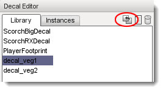
The Retarget Decal Instances dialog box will open. From here you can reassign the decal datablock.
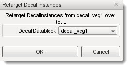
Select a Decal Datablock from the drop down list that you wish to use for the selected decal.
Editing Tools
The Decal Editor placement and manipulation tools appear on the toolbar down the left of your screen whenever the Decal Editor is active. Each tool can be activated by clicking the appropriate icons or by pressing its hotkey. Hotkeys are assigned 1 through 5 from top to bottom in the toolbar and are visible by hovering the mouse over the icon.
These tools will enable you to quickly place, scale and rotate your decals.
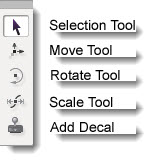
These tools will enable you to quickly place, scale and rotate your decals.
Adding a Decal
Before adding a decal, a datablock for the decal must exist in the Decal Library. Please see the section "Adding a New Decal Datablock to the Library" above.
To add a decal to a level select a decal from the Library tab of the Decal editor pane, click the Add Decal tool, and then click on the terrain where you would like to see your decal instance appear. The same decal can be placed in a level multiple times. Each such copy is referred to as an instance of the decal.
Selecting a Decal
The selection tool enables you to directly select a decal instance that has already been placed in the level by simply clicking on it. Its datablock properties will then be shown in the Template Properties pane for viewing and/or editing.
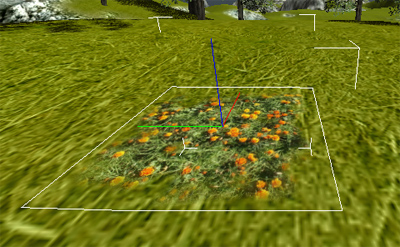
Deleting a Decal Instance
There will be times when you need to delete an a decal instance. The decal can be selected by the Selection tool (see the "Selecting a Decal" section) and then pressing the Delete key. Or you can select the required decal from the Instances tab in the Decal Editor pane, then press the Delete key or press the Delete button, represented by the trash can icon.
Note: This will only delete the selected decal instance in the world, not the decal’s datablock listed on the Library tab.
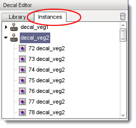
Moving a Decal
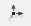 To move a decal instance simply select the decal using any method described above then click the Move tool icon. The normal Object Editor movement gizmo will appear. Click any axis arrow using the left mouse button, then hold the button down and drag the mouse to move the decal in that direction. Release the mouse button to drop the decal at the new location.
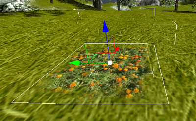
Scaling a Decal
If you find that the decal is either too small or too large you can use the Scale tool to resize the decal. This uses the standard world gizmo, but will not scale on the vertical axis due to decals being restricted to two-dimensions. Click any axis cube using the left mouse button, then hold the button down and drag the mouse to scale the decal in that direction. Release the mouse button to leave the decal at the new scale.
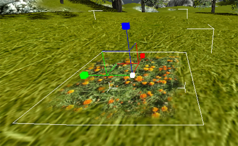
Rotating a Decal
If for any reason you find that you need to rotate a decal, you can use the Rotate Tool do so. To rotate a decal, select the decal by any method described above, and then click the Rotate Tool icon. The standard world rotational gizmo will appear. Click any rotation circle using the left mouse button, then hold the button down and drag the mouse to rotate the decal in that direction. Release the mouse button to leave the decal at the new location.
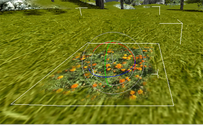
Note: Because decals are two-dimensional rotating a decal will never cause the decal to “leave” the surface upon which it has been placed. Rather, when a decal is rotated by any axis the decal will rotate in two-dimensions locked to that surface. This can cause some strange effects if the surface that contains a decal is curved with a radius less than the size of the decal. As with all the other T3D editors, the more that you experiment and use the tools the more familiar you will be with them. With practice and time you will find many uses for the Torque 3D decal system.
If at any time you make a mistake you can press CTRL+Z to undo it.
Properties
A Decal has only a small amount of properties which can be edited using the Template Properties pane:
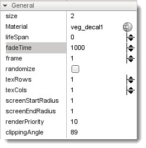
Size: The size of the decal rendered onto the surface.
Material: Specifies the Material selected to display as the decal.
Lifespan: Time in Ms (milliseconds) that the decal will exist in the world after being placed dynamically.
FadeTime: Time for the decal to fade out in Ms (milliseconds).
Frame: Index of texture rectangle to use for this decal, if the texture consists of multiple images.
Randomize: Randomizes the texture rectangle (frame) used
for each instance of the decal. So it essentially uses a random frame.
TexRows: Defines the number of image rows in a multiple
image material.
TexCols: Defines the number of image columns in a multiple
image material.
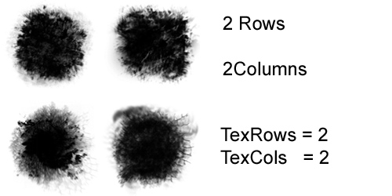
ScreenStartRadius: Distance check for rendering the alpha channel
of the decal.Visibility check based on the scale of the decal
ScreenEndRadius: Distance check for rendering the alpha
channel of the decal.Visibility check based on the scale of the decal
Render Priority: If more than one decal are on top of each other the decal with the higher
priority will rendered first
Clipping Angle: The angle in degrees used to display geometry that
faces away from the decal projection direction.
Conclusion
This article covered the Decal Editor and how to use its features. With planning and a good set of materials, you can add variety to any scene by breaking up repeating textures with interesting ground cover such as leaves, adding litter to city pavements or even breaking up a wall with a bit of graffiti. Not only this, you now have full control over the parameters of any dynamically added decals such as weapon damage marks and bullet holes.
As with all projects though, please remember to save regularly!
|
{kind=link}
{kind=link}